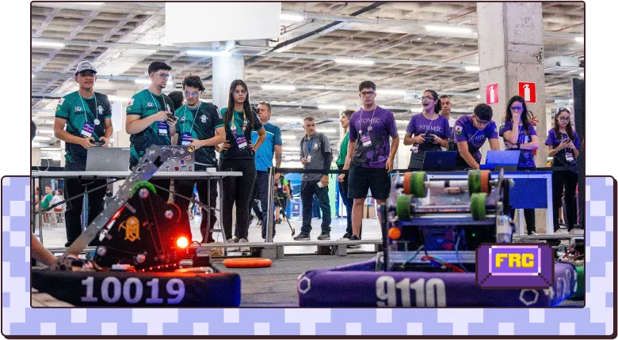

FESTIVAL SESI DE ROBÓTICA
As competições oferecem oportunidades para:
◆ Desenvolver habilidades de trabalho em equipe e colaborativo;
◆ Promover a aprendizagem social e emocional;
◆ Incentivar a pesquisa científica e projetos de inovação;
◆ Proporcionar experiências e a chance de criar uma rede de contatos estratégicos, facilitando a futura inserção no mercado de trabalho;
◆ Desenvolver habilidades técnicas, como programação, desenhos técnicos e prototipação.
Para mais informações sobre o Torneio SESI de Robótica e as demais modalidades, acesse o link pelo QR Code.
FIRST® LEGO® League Challenge (FLLC)
Conheça
Estudantes de 9 a 15 anos são desafiados a buscar soluções para problemas do dia a dia, com temas que mudam a cada temporada. De início, o técnico aborda o conceito de trabalho em equipe com os jovens, reforçando a importância da sintonia nas atividades em grupo, com base em valores como respeito, ganho mútuo e competição leal e amigável.
Seguindo regras específicas para cada temporada, os estudantes constroem robôs com a tecnologia LEGO® Education, que devem ser programados para realizar uma série de missões. Além disso, desenvolvem projetos de inovação voltados para problemas do mundo real.

Conheça
Para integrar uma equipe FLL, os alunos precisam ser aprovados em um processo seletivo, organizado por meio de um edital unificado criado pelo NITE. O ATE deve acompanhar todo o processo seletivo em conjunto com a equipe pedagógica, garantindo o cumprimento dos prazos e entregas necessários, conforme o edital.
Conheça
O edital prevê a realização de um Torneio Microrregional entre equipes da mesma região. Esse torneio faz parte do processo seletivo para a equipe oficial, proporcionando aos competidores uma melhor preparação para a etapa regional, além de permitir a escolha dos alunos com o perfil mais adequado para compor a equipe FLL.
Conheça
Após a seleção dos competidores da equipe oficial, a gerência da unidade definirá o técnico oficial, que pode ser o ATE ou um professor da unidade. Caso o ATE não seja escolhido como técnico oficial, ele deverá continuar fornecendo apoio à equipe e ao técnico, especialmente na ausência deste.
FIRST® TECH Challenge (FTC)
FIRST®RoboticsCompetition (FRC)
F1 in Schools (F1)

Conheça um pouco mais sobre a modalidade F1

Parabéns, ATE, por concluir a fase final do treinamento.
Você está pronto para enfrentar a última missão?
Uma nova equipe de robótica foi formada recentemente na sua unidade.
Para ajudar a integrar os membros, o técnico pediu sua ajuda para criar um Kahoot sobre as modalidades de competição.
Sua missão é levar o material que você construiu até a equipe. Ao concluir esse desafio, você terá alcançado seus objetivos! Boa sorte!

Créditos
Referências
BRASIL. Ministério da Educação. Base Nacional Comum Curricular: Computação: Complemento à BNCC . Brasília: MEC/SEB, 2022.
PROPOSTA PEDAGÓGICA. Serviço Social da Indústria DR/MG. Belo Horizonte, 2024.
SERVIÇO SOCIAL DA INDÚSTRIA. Torneio de Robótica. Disponível em: https://www.portaldaindustria.com.br/sesi/canais/torneio-de-robotica/. Acesso em: 9 dez. 2024.
SERVIÇO SOCIAL DA INDÚSTRIA. Guia de educação tecnológica . Belo Horizonte: SESI/DR-MG, [2024]. 29 p.